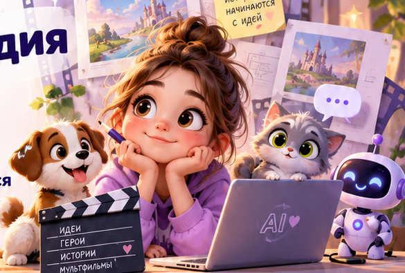

1. Добавь референс
Загрузи изображение героя из ChatGPT, если генератор поддерживает его.
Выбери генератор, опиши действия — получи готовый профессиональный видеопромпт.

Всё заполняется здесь. Видео создаётся в выбранном генераторе — без подключения к нему нашего сайта.
Загрузи изображение героя из ChatGPT, если генератор поддерживает его.
Скопируй текст с сайта и вставь в поле видеогенератора.
Скачай готовое видео на своё устройство и возвращайся к проекту.
💡 Доступные длительности и способы задания голоса зависят от модели. Если генератор не поддерживает выбранную длительность, используй поддерживаемую и разбей историю на части.
Твой промпт сохранится в разделе «Мой проект» на этом устройстве.
Открыть мой проект →